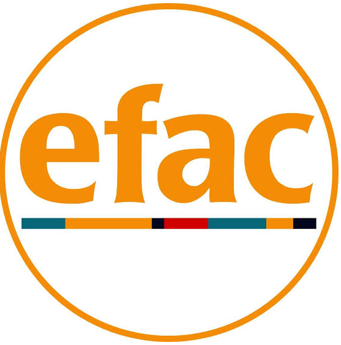
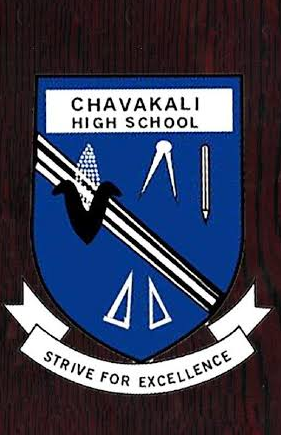
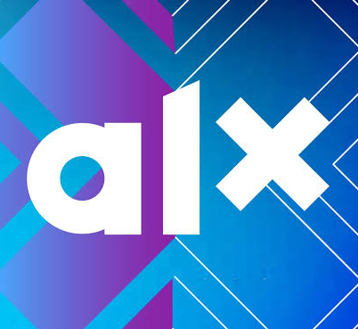
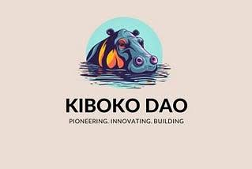
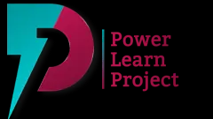
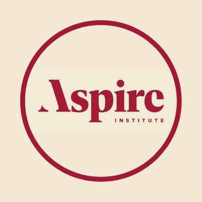

My Affiliations
These organizations have shaped my journey, each contributing uniquely to my growth as a leader, technologist, and change-maker. Here's how each one has impacted my path.

Education for All Children (EFAC)
2020 – PresentA Catalyst for Growth & Excellence
EFAC has been more than a sponsor—it has been the foundation of my personal and professional journey. Since 2020, this organization has walked with me through high school and into higher education, providing not just financial support but a holistic ecosystem of growth. Through transformative workshops, career guidance sessions, and dedicated mentorship programs, I've gained the skills and confidence to excel. The connections I've built within the EFAC community—fellow scholars, mentors, and alumni—have evolved into a powerful network that continues to open doors. What began as educational sponsorship has become a lifelong partnership in my development as a leader and changemaker.
Technical University of Kenya (TUK)
September 2024 – PresentCurrently pursuing a Bachelor's degree in Mechanical Engineering at the Technical University of Kenya, I am building a strong foundation in engineering principles while integrating my passion for technology and innovation. My studies span core areas including thermodynamics, fluid mechanics, materials science, and manufacturing processes. Beyond the classroom, I am exploring the intersection of mechanical engineering with software development—bridging the physical and digital worlds. This dual expertise in engineering and technology positions me uniquely to tackle complex challenges in automation, robotics, and sustainable design.

Chavakali High School
2020 – 2023Chavakali High School was where my foundation in discipline, leadership, and excellence was forged. During my four years, I immersed myself in chess and hockey—sports that taught me strategic thinking, teamwork, and resilience. The discipline I cultivated during these years became the bedrock of my character, enabling me to graduate with an impressive A- (76 points). Beyond academics, the school environment instilled in me the values of integrity and perseverance that continue to guide my journey today.

ALX Africa
April 2 – July 4, 2024In 2024, I completed the AI Career Essentials (AiCE) program at ALX Africa—an intensive 8-week journey that equipped me with cutting-edge AI-augmented professional development skills for the digital age. From April 2nd to July 4th, I immersed myself in understanding how artificial intelligence is reshaping industries and how to leverage these tools for professional growth. This program sharpened my ability to work alongside AI technologies, enhancing my productivity and preparing me for the future of work in an AI-driven world.

Kiboko DAO
Workshop ParticipantKiboko DAO introduced me to the transformative world of blockchain technology and decentralized communities. Through an intensive and highly engaging workshop, I gained foundational knowledge about blockchain ecosystems, decentralized governance, and the power of community-driven innovation. Beyond the technical insights, this experience was invaluable for networking—I connected with passionate builders, developers, and innovators who are shaping the future of Web3 in Africa. The workshop opened my eyes to the possibilities of blockchain beyond cryptocurrency, sparking my interest in how this technology can drive social impact.

Power Learn Project (PLP)
July 8 – October 2025The Power Learn Project's Software Development program was a transformative 16-week journey that equipped me with industry-ready technical skills. Starting July 8th, 2025, I dove deep into Python, Web Technologies, and Database Management, while also mastering the MERN stack (MongoDB, Express.js, React, Node.js) for full-stack development. Beyond coding, the program integrated Startup Building & Employability modules and Software Engineering Essentials, giving me a holistic understanding of the tech industry. The culmination of this journey was building a fully functional MERN application—a testament to my ability to apply these skills to real-world projects.

Aspire Leaders Program
February 4 – April 7, 2026As a member of Cohort 1, 2026, the Aspire Leaders Program was a transformative 9-week leadership journey delivered in partnership with Harvard University faculty. The program was structured into three powerful phases: Personal & Professional Development with strengths-based assessments and professional skills training; the Aspire Horizons Course led by Harvard faculty exploring leadership, digital transformation, and community engagement; and Immersive Learning through masterclasses from MIT, Harvard, and Caltech on Economics, Renewable Energy, Social Entrepreneurship, and Global Citizenship. This program transformed how I see my role in creating change.